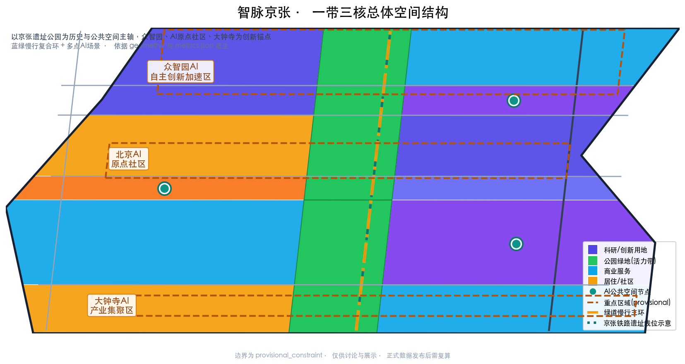
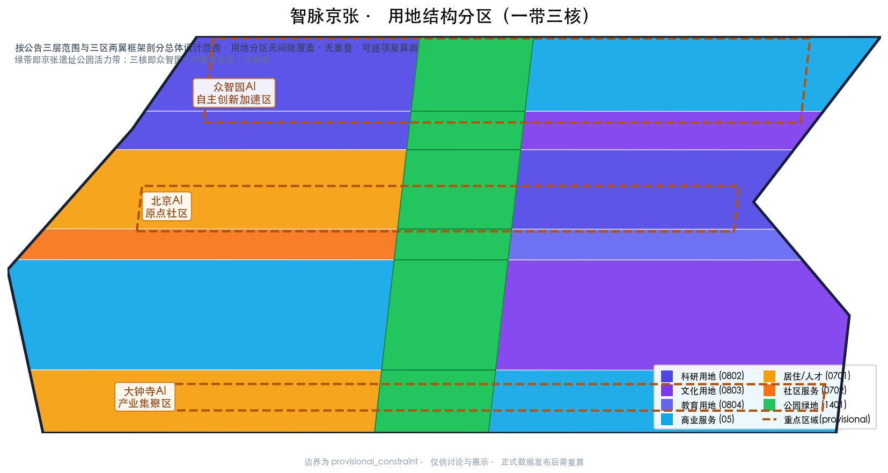
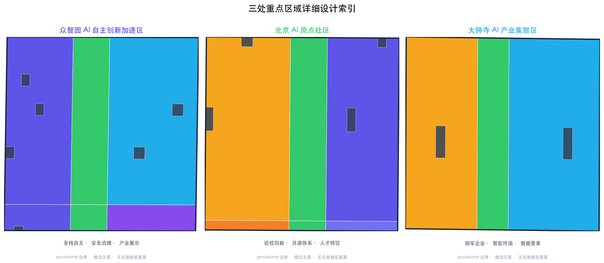
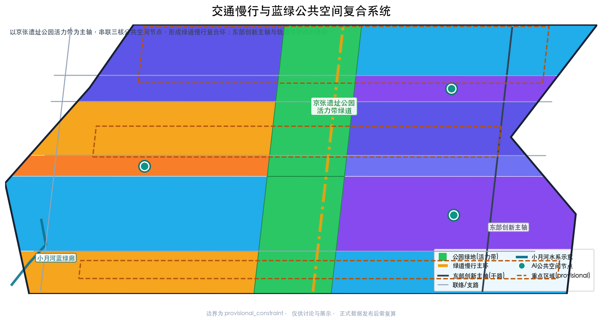
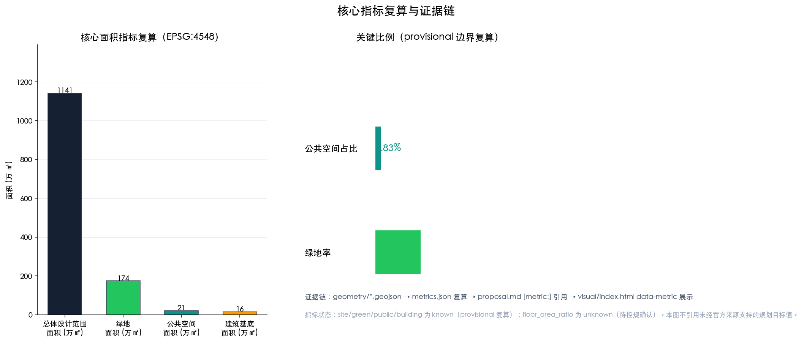

智脉京张——百年铁路文脉的AI创新传输带城市设计
以百年京张铁路文脉为文化主轴，提出「智脉京张」概念：一带三核、多点场景、蓝绿慢行复合环；面向AI全栈自主创新体系、世界级创新生态、AI+场景赋能、智能化活力城市与全球AI治理话语权五大功能，覆盖众智园AI自主创新加速区、北京AI原点社区、大钟寺AI产业集聚区三处重点区域的formal城市设计。
智脉京张——百年铁路文脉的AI创新传输带城市设计
设计依据与资料清单
本 formal 方案以《百年京张AI创新带城市设计国际方案征集资格预审公告》为第一依据，以 brief/site-package/design_brief.json、allowed_design_space.json、sources.json、agent_taskbook.json、enums/、ranges/、schemas/ 与 data/source_registry.json 为机器可读依据，达到控制性详细规划的城市设计深度与规划综合实施方案的城市设计深度。设计判断全部拆分为可追溯来源、可复算指标、可校验图层和可人工复核假设：proposal.md 是唯一主体方案文本，geometry/*.geojson、metrics.json、sources.json、assumptions.json、compliance_matrix.json、standard_matrix.json、design_depth_matrix.json 为证据与复算数据，A3 文册、A0 展板和离线 visual/index.html 帮助人类评审理解方案但不得与机器可读数据矛盾。
本节证据链引用 [source:OFFICIAL-ANNOUNCEMENT]、[source:AGENT-TASKBOOK]、[source:SITE-PACKAGE]、[source:SOURCE-REGISTRY]、[source:PROCESSED-FACT-PACK]、[source:BOUNDARY-SOURCE]、[source:KEY-AREA-SOURCE]，以及 [standard:PROJECT-OFFICIAL-ANNOUNCEMENT]、[standard:PROJECT-AGENT-OPEN-CALL-TASKBOOK]、[standard:MOHURD-URBAN-DESIGN-MEASURES]、[standard:MOHURD-CONTROL-DETAILED-PLANNING]、[standard:MNR-LAND-USE-CLASSIFICATION-GUIDE]、[standard:MOHURD-ARCH-DESIGN-DEPTH-2016] 与 [depth:existing_conditions_diagnosis]。
资料使用边界：data/source_registry.json 区分 formal-ready、background_only、provisional_only 与 needs-review 来源。本方案只把 official_public、user_provided_cleared 与 agent_generated_design 用于正式证据；provisional 边界只用于生成、展示与临时自检，不升级为官方红线、法定控规、正式评分依据或实施承诺。当前公告、任务书与结构化 site package 属 formal-ready；临时粗略边界属 provisional-only，正文、sources.json、assumptions.json 与 visual/index.html 均明确披露精度限制并约定官方 polygon 发布后复算。

由于官方 SITE_BOUNDARY 与三处 KEY_AREA 尚未发布，本方案使用 brief/site-package/geometry/provisional_boundaries.geojson 生成临时 formal 包。geometry/site_boundary.geojson#SITE-001 与 geometry/key_areas.geojson#PROV-KEY-001 均标注为 provisional_constraint、official_boundary=false、boundary_precision=provisional_rough，只能用于方案生成、自检、可视化和设计讨论，不作为 official redline、审批依据、精确面积依据或法定控制结论。该组织方数据缺口不阻断内容评分；官方 polygon 发布后，site boundary、key areas、land use、roads、green space、public space、buildings、phasing 及全部 metrics 均需重算。边界与重点区的可读解释对应 [data:geometry/site_boundary.geojson#SITE-001]、[data:geometry/key_areas.geojson#PROV-KEY-001]，面积复算对应 [metric:site_area_sqm]、[metric:key_area_count]。
三层范围工作框架
公告确定三个层次：统筹研究范围（43.6 km²，北至北五环路、东至京藏高速、南至西直门外大街、西至万泉河路）关注 AI 产业生态、战略定位、创新链与未来城市形态；总体设计范围（11.4 km²，以京张遗址公园周边 1-2 公里城市地区和产业区为主）要求形成城市更新总体框架、产业空间布局、交通市政支撑与城市风貌控制；重点区域范围（368.4 ha，含众智园、AI原点社区、大钟寺三处详细设计地区）要求明确功能业态、建筑规模、拆改留分类、公共空间连通与交通组织。三层范围在 compliance_matrix.json 中逐条映射，保证公告 1.3、1.4、1.5 与 agent.1-agent.6 必选任务都有章节、图层、指标、图纸与 HTML 证据。
三层工作框架的深度项由 [depth:three_level_scope_framework] 与 [depth:overall_spatial_structure] 约束，空间证据以 [data:geometry/site_boundary.geojson#SITE-001] 与 [data:geometry/key_areas.geojson#PROV-KEY-001] 为准，任务依据以 [standard:PROJECT-OFFICIAL-ANNOUNCEMENT] 为准。三层工作不是互相割裂的图纸集合：统筹研究决定产业链与城市形态判断，总体设计把判断落实到更新项目、空间结构与设施承载，重点区域详细设计验证具体地块、建筑、交通、公共空间与 AI 应用场景的可实施性。生成顺序为：先锁定边界与约束，再生成用地、建筑、道路、绿地、公共空间、分期与 AI 场景节点，最后复算指标并解释哪些结论受 provisional boundary 限制。

本方案建议总体概念为**「智脉京张」**：以京张遗址公园为历史与公共空间主轴，以众智园、AI原点社区、大钟寺三处重点片区为创新锚点，以高校、企业、社区与轨道站点为日常网络，形成**一带三核、多点场景、蓝绿慢行复合环**的空间组织。主名称「智脉京张」呼应百年京张铁路（詹天佑主持、中国人自主设计建设的第一条干线铁路）作为"国家自强之脉"，转译为面向 AI 时代的"智能创新之脉"；英文名 **ZHANG-ZHI SMART BELT**（"京张智脉创新带"）。"一带"不是额外红线，而是把三层范围转译为工作方法；"三核"对应三处重点区域；"多点场景"对应 AI+公共服务、产业服务与城市生活的可运营节点；"复合环"对应慢行、绿地、公共空间与活动路线的联动。命名体系与 Logo 方向见后文统筹研究章节。
| 层级 | 设计问题 | 方案回答 | 数据落点 | | --- | --- | --- | --- | | 统筹研究范围 | AI产业生态与未来城市形态如何组织 | 建立"高校策源—开源协作—企业转化—公共体验—国际传播"创新链 | compliance_matrix.json、standard_matrix.json | | 总体设计范围 | 产业空间、城市更新、交通市政与风貌如何落图 | 用地、建筑、道路、绿地、公共空间、分期图层共同表达 | [data:geometry/land_use.geojson#LU-001]、[data:geometry/roads.geojson#ROAD-001] | | 重点区域范围 | 三处片区如何达到详细设计深度 | 分别提出定位、空间动作、AI场景与实施依赖 | [data:geometry/key_areas.geojson#PROV-KEY-001]、[data:geometry/key_areas.geojson#PROV-KEY-002]、[data:geometry/key_areas.geojson#PROV-KEY-003] |
统筹研究范围产业与未来城市研究
统筹研究范围以构建世界级 AI 创新生态体系为总目标，回应公告 1.5（1）与 agent.1「一带总体概念与功能统筹方案设计」、agent.2「AI全栈自主创新体系与世界级AI创新生态设计」。方案梳理海淀高校院所、头部企业、算力算法数据要素、孵化平台、上市企业、独角兽与科技服务资源，提出创新链、产业链、人才链与城市服务链的空间协同框架，并以 [source:AGENT-TASKBOOK] 与 [standard:PROJECT-AGENT-OPEN-CALL-TASKBOOK] 标注该类要求来自 agent 开源征集任务而非法定规划控制。
**三大定位**：百年京张文化带、都市 AI 生活体验带、AI 融合创新带。**五大功能**：AI 全栈自主创新体系、世界级 AI 创新生态、AI+ 场景赋能新范式、智能化 AI 活力城市、AI 治理全球话语权。**三区两翼协同回路**：三区为北京 AI 原点社区（世界级 AI 创新生态）、众智园 AI 自主创新加速区（AI 全栈自主创新体系与 AI 治理全球话语权）、大钟寺 AI 产业集聚区（智能原生新业态）；两翼为中关村科技服务翼（要素全球化配置、中关村 IP 与资本赋能）与小月河场景赋能翼（AI 场景赋能与智能化 AI 活力城市）。三区通过中部京张遗址公园活力带串联，两翼通过科技服务与小月河蓝绿廊赋能，形成"三区为核、两翼赋能、一带缝合"的协同回路 [data:geometry/land_use.geojson#LU-001]、[data:geometry/public_space.geojson#PUB-001]。
**命名体系与 Logo 方向**：主名称「智脉京张」，英文 ZHANG-ZHI SMART BELT；片区级名称沿用众智园、AI原点社区、大钟寺；场景级名称按"功能+意象"命名（如"开源发布厅""端侧算力驿站"）。Logo 方向为一条由左至右渐变的水平"智脉"，由三段组成：深蓝（京张铁路钢轨意象）→ 青绿（蓝绿慢行活力带）→ AI 紫（智能创新节点），端点以中国铁路路徽式的轨道钉元素收尾，寓意"铁路文脉承接智能创新"；字体建议用衬线中文与几何英文混排，色彩主色为 #162033（京张墨）、#0f766e（智脉青）、#4f46e5（AI 紫）。该方向为概念建议，字体、图标与商标须清权后再使用，不作为已定稿视觉规范。
**全球 AI 创新生态案例**（agent.2 要求 5-8 个，可读摘要，逐案来源为公开行业常识性信息、正式深化前须核验权威来源）：
| 案例 | 关键启示 | 来源性质与核验状态 | | --- | --- | --- | | 斯坦福研究园区（Stanford Research Park） | 大学策源、园区转化的"近校创新"原型 | 公开行业常识；深化前核验官方园区资料 | | 波士顿肯德尔广场（Kendall Square） | 生命科学与 AI 集聚、共享测试与人才密度优先 | 公开行业常识；深化前核验规划与运营资料 | | 新加坡纬壹科技城（one-north） | 研发、居住、休闲混合的"工作-生活-交往"一体化 | 公开行业常识；深化前核验 JTC 公开资料 | | 深圳南山智园 | 硬件+软件+数据要素协同、成果就地转化 | 公开行业常识；深化前核验政府与园区公开资料 | | 杭州未来科技城 | 互联网平台带动场景开放与生态集聚 | 公开行业常识；深化前核验规划公开资料 | | 上海张江 AI 岛 | 大科学装置与产业协同、国际研发社区 | 公开行业常识；深化前核验公开规划资料 | | 特拉维夫罗斯柴尔德大道 | 创业社群与公共空间互塑、夜间活力 | 公开行业常识；深化前核验城市研究资料 | | 伦敦国王十字（King's Cross） | 铁路遗产区更新为知识产业街区 | 公开行业常识；深化前核验更新机构公开资料 |
案例启示可转化为：近校策源、开源协作、场景开放、蓝绿交往、轨道缝合、活动运营六类空间与运营机制，对应本方案各章节 [source:AGENT-TASKBOOK]、[standard:PROJECT-AGENT-OPEN-CALL-TASKBOOK]。**来源边界说明**：上述案例为公开行业共识性信息，用于类比启发设计机制，不作为正式统计依据；正式深化阶段须为每个案例补充可核验的官方/权威来源（纳入 sources.json 与 compliance_matrix.json），本案不据此编造企业名单、投资额或产值数据。
未来城市形态研究回答 AI 如何改变工作、生活、社交、学习、交通与公共服务：把 AI 交通系统、连续绿色空间、创新服务设施与国际化工作生活氛围落实为可定位的功能区、节点、廊道与场景。本方案通过 [standard:MOHURD-URBAN-DESIGN-MEASURES] 要求的城市风貌、公共空间与建筑布局统筹，回接 [data:geometry/land_use.geojson#LU-001]、[data:geometry/public_space.geojson#PUB-001] 与 [depth:overall_spatial_structure]。若提出全球 AI 创新活动、开发者社区、开放场景或朝圣路线，均作为"概念建议/参考方案/可供专业团队深化研究"，不写成已确定的政府活动或实施安排。
**区域协同与要素流**（评审建议补充，概念建议）：创新带不宜孤岛化，应在更广区域网络中定位。空间层面提出三条外部协同接口：① **北向大科学协同**——对接怀柔科学城、未来科学城的大科学装置与基础研究策源，以创新带承载成果转化与产业加速，形成"策源在怀柔/未来、转化在京张"的接口；② **南向区域产业协同**——对接经开区与京津冀协同创新体系，以中关村科技服务翼组织要素全球化配置，形成"北京策源—津冀制造/应用"的产业链协同回路；③ **枢纽协同**——依托京张铁路遗址线与轨道站点，向北衔接延庆/张家口方向文旅科创、向南衔接中关村核心区，形成纵贯的区域创新廊道。上述协同以要素流（人才、资本、算力、数据、场景、订单）而非行政区划为组织逻辑，具体协作对象、空间接口与量化指标须由专业团队与相关区域深化研究，本方案仅提供方向性框架 [source:AGENT-TASKBOOK]、[standard:PROJECT-AGENT-OPEN-CALL-TASKBOOK]。
总体设计范围城市更新与控规深度城市设计
总体设计范围要求达到控制性详细规划的城市设计深度，回应公告 1.5（2）关于产业目标、功能布局、创新指标体系、城市更新总体框架、更新项目清单、实施政策、建筑总规模、交通轨道、市政配套、京张遗址公园活力带与城市风貌的要求。geometry/land_use.geojson 完整覆盖设计边界且无重叠（18 个用地分区，无间隙剖分 [data:geometry/land_use.geojson#LU-001]），geometry/buildings.geojson 表达更新建筑基底（27 个示意建筑 [data:geometry/buildings.geojson#BLDG-001]），geometry/roads.geojson 表达微循环、慢行与轨道接驳（7 条中心线 [data:geometry/roads.geojson#ROAD-001]），metrics.json 复算核心面积、比例与图层数量（[metric:site_area_sqm]=11,412,825.39 ㎡、[metric:building_footprint_area_sqm]=156,679.58 ㎡）。
本节按照 [standard:MOHURD-CONTROL-DETAILED-PLANNING] 把控规深度内容拆成可审查对象，由 [depth:land_use_layout] 与 [depth:development_intensity_controls] 约束。总体空间结构为"一轴三带四廊"：一轴即京张遗址公园活力带主轴（南北贯通）；三带即东部创新主轴带、西部生活服务带、清河-小月河蓝绿带；四廊即四条东西向街区联络廊，串接三处重点区与两翼。产业功能比例按空间分区控制：北段众智园以研发与创新孵化为主，中段 AI 原点社区以近校科研、人才居住与成果转化为主，南段大钟寺以产业服务、智能终端与内容消费为主 [data:geometry/land_use.geojson#LU-001]。
交通、轨道、市政与配套：围绕轨道站点一体化（大钟寺站、五道口方向接驳）、道路微循环、非机动车停放、停车供给、创新服务平台、人才生活服务、新型基础设施、分布式能源、端侧算力与市政设施融合提出空间布局与实施路径（[depth:traffic_rail_slow_parking]、[depth:municipal_new_infrastructure]）。涉及建筑高度、开发强度、道路红线、退线与设施标准的内容，在官方控规条件缺失前一律写为"待正式控规条件确认"，不以 agent 推测值冒充审定指标（见 assumptions.json 的 A-CONTROLS-001）。

重点区域详细设计
重点区域详细设计达到规划综合实施方案的城市设计深度，覆盖公告 1.5.3.1、1.5.3.2、1.5.3.3 与 [depth:three_key_area_detailed_design]。三处重点区域以 [data:geometry/key_areas.geojson#PROV-KEY-001]、[data:geometry/key_areas.geojson#PROV-KEY-002]、[data:geometry/key_areas.geojson#PROV-KEY-003] 为 provisional 边界，每处形成"定位 + 空间结构 + 建筑更新 + 交通慢行 + 公共空间 + AI 场景 + 实施风险"可读小方案。
| 重点片区 | 设计定位 | 空间动作 | AI产业与运营场景 | 证据引用 | | --- | --- | --- | --- | --- | | 众智园AI自主创新加速区 | 花园型全栈自主创新街区 | 强化清河界面、产业展示、低碳创新交往与对外交通；以绿色空间承载开放测试与标准治理展示 | 自主模型测试、标准制定工作坊、安全治理展示、低碳算力体验 | [data:geometry/key_areas.geojson#PROV-KEY-001]、[depth:three_key_area_detailed_design] | | 北京AI原点社区 | 近校型成果转化与人才社区 | 组织校区、园区、街区慢行缝合；补足成果发布、人才服务、居住生活与开源协作空间 | 开源社区、成果发布、人才特区服务、近校孵化 | [data:geometry/key_areas.geojson#PROV-KEY-002]、[source:AGENT-TASKBOOK] | | 大钟寺AI产业集聚区 | 城市型智能经济与国际交往街区 | 围绕大钟寺站一体化、四象限步行连通、商业服务与重点企业公共环境更新 | 智能体与智能终端展示、内容消费、数据要素与国际路演 | [data:geometry/key_areas.geojson#PROV-KEY-003]、[metric:key_area_count] |
**众智园AI自主创新加速区**（192.1 ha，provisional）：围绕国家人工智能平台、全栈自主创新、标准制定、安全治理、产业展示、对外交通与清河文化，提出"花园研发街区"：北部临北五环一侧布局 AI 研发与全栈创新用地 [data:geometry/land_use.geojson#LU-001]，沿清河界面布置低碳绿色创新交往环境与绿色空间 AI 场景 [data:geometry/green_space.geojson#GS-002]，以共享测试场与标准治理咨询承载自主模型测试与安全治理展示。实施风险：清河蓝线、防洪、对外交通组织与现状权属待确认。
**北京AI原点社区**（104.3 ha，provisional）：围绕近校创新、成果孵化转化、人才特区、开源体系、品牌活动、建筑拆改留、成果展示发布、居住生活配套、校区园区慢行联系与轨道站点一体化，提出"近校型成果转化与人才社区"：以 [data:geometry/land_use.geojson#LU-007] 组织人才居住与社区服务，[data:geometry/land_use.geojson#LU-009] 组织近校科研用地，通过校区-园区慢行缝合 [data:geometry/roads.geojson#ROAD-006] 与成果转化驿站，服务开源发布与人才特区。实施风险：校区边界、权属、首层业态与历史建筑保护条件待确认。
**大钟寺AI产业集聚区**（72.0 ha，provisional）：围绕领军企业、智能体、智能终端、内容消费、数据要素、数字资产、商业服务、规划绿地复合利用、大钟寺站一体化与路口四象限步行连通，提出"城市型智能经济与国际交往街区"：以 [data:geometry/land_use.geojson#LU-013] 组织产业服务商业用地，[data:geometry/land_use.geojson#LU-015] 组织 AI 内容与数字资产创新用地，通过 [data:geometry/public_space.geojson#PUB-009] 公共空间节点与四象限步行连通组织国际路演与智能终端展示。实施风险：大钟寺站一体化、道路交叉口改造与市政管线迁改待确认。
三处重点区若官方 polygon 缺失，可暂用 provisional 边界，但正文、HTML、sources、assumptions 与 self_check 均说明其不能作为正式评分或审批依据；官方 polygon 发布后需重算全部空间图层与指标。
AI 创新生态、人才画像与 AI+ 场景
面向 AI 人才、企业、居民与公共治理建立空间需求画像，覆盖研发办公、开源协作、成果发布、企业服务、人才居住、社交学习、消费生活、运动休闲与国际交往。AI+ 场景覆盖 AI+信软、AI+医疗、AI+教育、AI+法律、AI+生活服务、AI+交通、AI+公共空间等方向，每个场景说明服务对象、空间位置、数据来源、隐私边界、人工复核机制与运营主体 [source:AGENT-TASKBOOK]、[standard:PROJECT-AGENT-OPEN-CALL-TASKBOOK]。
**不少于 5 类用户画像**：
| 用户画像 | 典型需求 | 空间响应 | 隐私与自检边界 | | --- | --- | --- | --- | | 开源开发者 | 发布、协作、测试、社区声誉 | 原点社区开源发布厅、公共代码墙、夜间协作空间 [data:geometry/public_space.geojson#PUB-001] | 不采集个人行为轨迹；活动数据只做聚合统计 | | 初创团队 | 低成本办公、算力入口、产品试验场 | 众智园共享测试场、端侧算力服务点、标准治理咨询 [data:geometry/land_use.geojson#LU-003] | 算力与数据服务需另行授权 | | 头部企业访客 | 展示、商务、国际接待、人才招聘 | 大钟寺国际路演客厅、轨道站点接驳、重点企业周边公共空间 [data:geometry/public_space.geojson#PUB-009] | 企业标识与案例须清权 | | 周边居民 | 通勤、休闲、社区服务、低扰动更新 | 京张遗址公园慢行环、社区服务嵌入、夜间照明与活动分级 [data:geometry/green_space.geojson#GS-008] | 不将居民画像用于商业推荐 | | 高校师生 | 成果转化、跨校协作、日常慢行 | 校区-园区慢行缝合、成果转化驿站、AI教育体验点 [data:geometry/roads.geojson#ROAD-006] | 校园数据与科研成果需授权 |
**不少于 10 张 AI 场景卡（含不少于 3 个产业测试验证场景）**：
| 场景卡 | 空间载体 | 类型 | 设计说明 | 运营主体方向 | 数据流程与复核 | KPI 与退出条件 | | --- | --- | --- | --- | --- | --- | --- | | 01 开源发布厅 | 北京AI原点社区 | 公共体验 | 面向高校、开源社区与初创团队，提供成果发布、代码贡献展示与小规模路演空间 [data:geometry/public_space.geojson#PUB-001] | 社区运营方+高校/开源组织 | 活动数据聚合统计；发布内容人工审核后展示 | KPI：年发布场次、贡献数；无效果满一年评估退出 | | 02 安全治理沙盒 | 众智园 | **产业测试验证** | 将标准制定、安全评测、模型红队测试转译为可参观、可预约、可监管的展示与协作节点 [data:geometry/land_use.geojson#LU-001] | 专业评测机构+监管代表 | 测试样本与结果授权存储；红队结果不对外披露；人工安全复核 | KPI：测试项目数、安全告警闭环率；合规不达标即关闭 | | 03 端侧算力驿站 | 总体设计范围节点 | 新型基础设施 | 与公共服务、企业服务与低碳能源策略结合，作为待深化的端侧算力原型 [data:geometry/land_use.geojson#LU-013] | 新基建运营方+能源服务商 | 算力按授权计量；不采集个人数据；运行日志留存 | KPI：接入服务数、能效比；技术不可行即调整方案 | | 04 AI慢行导航 | 京张遗址公园活力带 | 公共体验 | 用可解释导视与低侵入传感识别慢行断点、拥挤节点与无障碍需求 [data:geometry/green_space.geojson#GS-005] | 城市管理部门+设施运营方 | 传感数据脱敏；不识别个人身份；人工复核导视点位 | KPI：慢行断点修复数、导视准确率；数据争议即停用传感 | | 05 大钟寺国际路演客厅 | 大钟寺AI产业集聚区 | 公共体验 | 服务智能体、智能终端与内容消费企业的展示、洽谈、媒体发布与国际交流 [data:geometry/public_space.geojson#PUB-009] | 产业运营方+会展机构 | 企业标识与影像清权；路演内容人工复核 | KPI：年路演场次、对接线索数；活跃度不足即调整招商 | | 06 清河低碳创新廊 | 众智园临清河界面 | 公共体验 | 把绿色空间、雨洪、步行骑行与 AI 展示结合，作为园区公共客厅 [data:geometry/green_space.geojson#GS-002] | 公园运营方+水务/生态部门 | 展示内容清权；生态监测数据公开 | KPI：绿道使用量、低碳活动场次；防洪条件不满足即暂缓 | | 07 近校成果转化街 | 北京AI原点社区 | 产业服务 | 面向高校成果转化，组织孵化、展示、法务、知识产权与投融资服务 [data:geometry/buildings.geojson#BLDG-007] | 高校成果转化机构+孵化器 | 科研成果与法务流程授权；不做投资承诺；转化记录可追溯 | KPI：转化项目数、孵化存活率；无产出满两年即评估 | | 08 数据要素会客厅 | 大钟寺片区 | **产业测试验证** | 以合规、授权、可审计为前提，展示数据要素与数字资产流通的城市服务界面 [data:geometry/land_use.geojson#LU-015] | 数据交易所/合规机构 | 数据流通合规授权；全程可审计可追溯；人工合规复核 | KPI：合规交易数、授权链路完整率；违规即下线 | | 09 AI生活服务样板街 | 社区与商业交汇处 | 公共体验 | 将医疗、教育、法律、生活服务等 AI+ 场景落到可运营的小尺度街区空间 [data:geometry/land_use.geojson#LU-016] | 社区服务方+服务商 | 服务数据最小化；关键服务人工复核；用户可申诉 | KPI：服务使用率、满意度、申诉闭环率；满意度低即整改 | | 10 全球AI活动周路线 | 一带公共空间系统 | **产业测试验证** | 形成从遗址文化、开源社区、产业展示到国际路演的可步行、可传播体验路线 [data:geometry/roads.geojson#ROAD-001] | 活动主办方+城市运营方 | 活动许可、安全预案与版权清权先行；参与数据聚合 | KPI：年活动周场次、国际参与度；安全风险即停办 |
每张场景卡的"运营主体方向"为概念建议（具体责任方由主办方与专业团队确定，本案不虚构组织）；"KPI 与退出条件"为审计模板，指标口径与目标值由运营主体结合预算核定。场景-空间-运营映射与隐私边界写入 compliance_matrix.json 与 visual/index.html，供评审追溯。
AI 治理建议遵守数据最小化、公开来源、可解释与人工复核原则 [source:AGENT-TASKBOOK]。城市智能体可以辅助识别慢行断点、公共空间热力、设施维护、企业服务需求与活动安全风险，但不能替代规划审批、不能输出未经授权的个人画像、不能声称获得官方实施承诺。场景-空间-运营映射与隐私边界写入 compliance_matrix.json 与 visual/index.html，供评审追溯。

用地、建筑规模与拆改留方案
用地分类依据 [standard:MNR-LAND-USE-CLASSIFICATION-GUIDE]，形成完整、闭合、无缝的用地分区：18 个分区覆盖 11,412,825.39 ㎡ 总体设计范围，含科研用地（0802，AI研发与全栈创新）、文化用地（0803）、教育用地（0804）、居住/人才用地（0701）、社区服务用地（0702）、商业服务用地（05）与公园绿地（1401，京张遗址公园活力带）。用地结构可逐项从 [data:geometry/land_use.geojson#LU-001] 复算面积，绿地率 [metric:green_ratio]=0.152707、公共空间占比 [metric:public_space_ratio]=0.018284、建筑基底 [metric:building_footprint_area_sqm]=156,679.58 ㎡。
建筑方案区分保留、改造、更新、新建与待确认对象 [depth:retain_renovate_demolish]，以 27 个示意建筑基底表达 [data:geometry/buildings.geojson#BLDG-001]，覆盖 AI 研发、办公、居住、人才公寓、社区服务、文化展示等类型。建筑高度、体量、界面与风貌控制由 [depth:height_massing_character] 管理：建议研发与办公建筑以中高层板式为主、沿活力带退让形成界面连续、屋顶以种植屋面与光伏构件整合；具体高度、强度、退线与建筑控制线在官方控规缺失前列为待确认，不制造伪精确结论。A3 文册给出更新项目清单与指标复核表，A0 展板把关键空间结构与重点片区表达清楚，HTML 页面提供指标与图层联动查看。
交通、轨道、市政与公共服务设施
交通方案回应公告对轨道站点一体化、道路微循环、慢行断点、对外交通、停车、非机动车停放与绿色交通系统的要求 [depth:traffic_rail_slow_parking]。重点覆盖北五环、京张遗址公园跨环路节点、五道口、清华东路西口、大钟寺站及重点企业周边交通联系。道路与慢行图层保持在提交边界内 [data:geometry/roads.geojson#ROAD-001]，形成"一纵多横"结构：东部创新主轴（干路）、西部生活服务干道、中部绿道慢行主环与四条东西向联络，总长约 26.47 km（[metric:road_length_m]）。轨道接驳以大钟寺站一体化、五道口方向接驳为节点 [data:geometry/roads.geojson#ROAD-004]。
市政与公共服务设施由 [depth:municipal_new_infrastructure] 约束，覆盖 AI 产业服务设施、创新服务平台、人才生活服务设施、新型基础设施、分布式能源、端侧算力与传统市政设施融合，说明设施标准、空间布局、服务半径、运营模式与分期实施逻辑。道路红线、管线、消防与市政条件缺失时，通过 assumptions.json 说明待补 [source:SITE-PACKAGE]，不作为审定条件。
蓝绿空间、公共空间与城市风貌
蓝绿空间方案以京张遗址公园活力带为骨架，统筹清河、小月河与高校、企业、社区出行需求，提出南北贯通、东西连通的步道、骑行道与绿色空间体系 [depth:blue_green_public_space]。绿地覆盖 1,742,823.90 ㎡（[metric:green_space_area_sqm]，[data:geometry/green_space.geojson#GS-002]），公共空间节点 208,668.82 ㎡（[metric:public_space_area_sqm]，[data:geometry/public_space.geojson#PUB-001]），构成复合环（[metric:green_ratio]、[metric:public_space_ratio]）。识别慢行断点、上跨环路节点、公园南端与北端景观节点，提出停车、体育、创新交往、科技测试、应用展示与公共服务复合利用策略。城市设计管理办法要求统筹景观风貌、公共空间与建筑控制，本节同时引用 [standard:MOHURD-URBAN-DESIGN-MEASURES]。
**无障碍与包容性设计**（评审建议补充，概念建议）：公共空间设计需覆盖儿童、老年人、残障人士、低收入群体、非数字用户与夜间劳动者，而非仅"识别无障碍需求"。具体方向包括：① 全龄友好慢行——连续无障碍坡道、防滑铺装、盲道与语音/触觉导视，公共活动空间避免高差割裂；② 适老与适幼设施——在社区服务用地 [data:geometry/land_use.geojson#LU-010] 与人才社区 [data:geometry/land_use.geojson#LU-007] 内配置适老化休息节点与儿童友好游戏场地；③ 非数字服务入口——AI 场景（如端侧算力驿站、AI 慢行导航）须保留人工柜台、纸质导览与电话服务，确保非数字用户可用；④ 夜间劳动者——沿清河低碳创新廊 [data:geometry/green_space.geojson#GS-002] 与产业街区设置夜间照明、便利店与安全步道；⑤ 公众参与与申诉——建立公共空间使用意见收集、利益冲突处理与数字排斥申诉纠错机制，作为运营前置条件。上述方向为概念建议，正式深化时须开展无障碍专项设计与公众参与评估 [source:AGENT-TASKBOOK]、[standard:MOHURD-URBAN-DESIGN-MEASURES]。
城市风貌融合京张铁路历史文化、中关村创新文化与 AI 创新文化，利用清华园火车站、北影等文化资源，提出城市基调、建筑风貌、屋顶形态、体量、界面与公共艺术引导 [depth:height_massing_character]。**AI 朝圣地标与荣誉展示体系**（agent.4 要求不少于 3 个，概念建议）：① 智能体贡献荣誉墙（沿遗址公园活力带，以低扰动公共艺术装置记录入选 Agent 与贡献者，呼应项目 Milestone 纪念体系）[data:geometry/public_space.geojson#PUB-001]；② 开源成果展示廊（AI原点社区开源发布厅延伸，展示开源项目与共建成果）[data:geometry/public_space.geojson#PUB-010]；③ 人工智能里程碑节点（沿京张铁路遗址线位设置的系列地标，以时间轴呈现从百年铁路到 AI 时代的创新里程碑）[data:geometry/constraints.geojson#CONS-001]。所有地标、导视、Logo、字体、图像、肖像与企业标识均须清权，不做过度娱乐化，不把概念地标写成已批准建设。

更新项目清单、实施政策与分期计划
形成可审查的更新项目清单，说明项目位置、类型、功能、责任主体、依赖条件、实施阶段、风险与评估指标 [depth:renewal_project_list]。geometry/phasing.geojson 表达三期范围 [data:geometry/phasing.geojson#P1]，compliance_matrix.json 把每个任务与分期和图纸挂接。
| 项目编号 | 项目名称 | 类型 | 主要依赖 | 证据引用 | | --- | --- | --- | --- | --- | | JZ-01 | 京张遗址公园慢行断点缝合 | 公共空间/交通 | 道路红线、桥下空间、交通组织复核 | [data:geometry/roads.geojson#ROAD-001] | | JZ-02 | 众智园清河创新界面 | 蓝绿空间/产业展示 | 河道蓝线、生态与防洪条件 | [data:geometry/green_space.geojson#GS-002] | | JZ-03 | 原点社区近校成果转化街 | 城市更新/产业服务 | 校区边界、权属、首层业态 | [data:geometry/buildings.geojson#BLDG-007] | | JZ-04 | 大钟寺站四象限步行连通 | 轨道一体化/慢行 | 轨道站点、道路交叉口、市政管线 | [data:geometry/public_space.geojson#PUB-009] | | JZ-05 | AI公共服务与端侧算力节点 | 新基建/公共服务 | 能源、算力、安全与运营主体 | [data:geometry/constraints.geojson#CONS-001] | | JZ-06 | 全球AI活动周公共路线 | 运营/品牌 | 公共空间许可、活动安全、版权清权 | [data:geometry/phasing.geojson#P1] |
**分期计划**（[depth:phasing_implementation]、[data:geometry/phasing.geojson#P1]）：P1 近期（2026-2028）以京张遗址公园活力带慢行缝合、开源发布厅与荣誉墙、端侧算力驿站、大钟寺站四象限连通为启动项目，以轻量设施、运营活动与服务平台先行；P2 中期（2029-2031）推进众智园清河创新界面、原点社区近校成果转化街、大钟寺智能终端展示街区等更新项目；P3 远期（2032-2035）完善市政、轨道接驳与风貌控制，形成完整蓝绿慢行复合环与长期运营框架。征集周期（2026-08-07 至 2026-08-31）是提交成果的时间要求，实施分期是城市更新与项目建设的推进路径，两者严格区分。
**全球 AI 创新活动体系与长期运营**（agent.6）：年度活动体系建议为"一季一主题"——春·开源共创季（开发者大会、黑客松）、夏·成果发布季（成果路演、开源成果展示廊开放）、秋·国际交流季（全球 AI 活动周、国际路演客厅）、冬·治理对话季（安全治理沙盒开放、标准制定工作坊）；活动品牌为「智脉京张」系列活动，传播视觉系统沿用 Logo 智脉三色；开发者社区运营机制包括开源代码墙、贡献荣誉体系、线上社区与线下工作坊；场景开放运营机制按"公共体验—预约体验—授权测试"三级开放；公共体验与城市地标运营结合智能体贡献荣誉墙与人工智能里程碑；国际传播与招引转化通过国际路演、开发者招聘日与政策资源对接形成"展示—洽谈—落户—成长"路径。所有活动、招商、资金、政策与运营安排均为概念建议或深化方向，不表述为已确定的政府安排 [source:AGENT-TASKBOOK]、[standard:PROJECT-AGENT-OPEN-CALL-TASKBOOK]。
**运营责任与治理机制**（评审建议补充，概念建议）：① 责任角色——建议设立活动统筹、开发者社区、场景运营、数据治理、公共体验与城市地标、国际传播六个运营角色，明确各自牵头与协作主体（具体责任方由主办方与专业团队确定，本案不虚构组织）；② 年度 KPI——按活动场次、社区成员数、场景试用数、国际访客数、成果转化线索数等设置年度指标，用于复盘与调整（指标口径与目标值须由运营主体结合预算核定，本案不编造）；③ 数据治理——活动与场景数据遵循数据最小化、脱敏、聚合统计与授权访问，设置数据留存与删除规则；④ 复盘与退出——每个场景卡配置"试点—评估—退出"条件，达到设定评估时点后复盘，不达标的场景允许退出并回收资源；⑤ 国际传播文案方向——英文主标语建议为 "Zhi-Mai Jing-Zhang: From a Century-Old Railway to an AI Innovation Belt"（中文：从百年京张到 AI 创新之带），配合英文活动手册、开发者指南与国际媒体素材，形成可检验的对外传播叙事（文案为方向建议，正式使用须经品牌与法务审核）。上述机制为概念建议，具体角色、KPI、数据治理细则与退出标准须由专业团队与运营主体深化 [source:AGENT-TASKBOOK]、[standard:PROJECT-AGENT-OPEN-CALL-TASKBOOK]。
指标体系、面积复算与合规矩阵
指标体系覆盖总体设计范围面积、重点区域面积、绿地与公共空间比例、建筑基底、更新项目数量、AI 场景节点、慢行连通、产业空间、人才服务与自检状态 [depth:metrics_recalculation]。known 指标均能从 GeoJSON 复算：site_area_sqm=11,412,825.39 [data:geometry/site_boundary.geojson#SITE-001]、key_area_count=3 [data:geometry/key_areas.geojson#PROV-KEY-001]、building_footprint_area_sqm=156,679.58 [data:geometry/buildings.geojson#BLDG-001]、green_ratio=0.152707 [data:geometry/green_space.geojson#GS-002]、public_space_ratio=0.018284 [data:geometry/public_space.geojson#PUB-001]、road_length_m=26,470 [data:geometry/roads.geojson#ROAD-001]。unknown 指标（如 floor_area_ratio）给出原因与正式提交前置条件（待官方控规与总建筑面积）。
指标分三类管理：第一类空间指标可由提交几何直接复算；第二类管控指标（容积率、建筑高度、建筑密度、退线、道路红线、设施标准）需官方控规或任务书附件支撑，列为待确认；第三类绩效指标（AI 创新指数、人才密度、产业服务满意度、慢行可达性、活动参与度、场景使用频次）需运营或产业数据持续校准，写入 metrics.json、assumptions.json 与 compliance_matrix.json，避免把运营愿景误写成审定规划条件。scripts/spatial_review.py 与 scripts/visual_review.py 结果为 formal 自检证据。
合规矩阵是任务响应性的主控文件：公告 1.3、1.4、1.5 全部 17 项与 agent.1-agent.6 全部 6 项必选任务均覆盖，并映射到报告章节、图层、指标、图纸、HTML 页面、来源、假设与自检项（compliance_matrix.json）。专业标准由 standard_matrix.json 覆盖 5 项必填标准，设计深度由 design_depth_matrix.json 覆盖 15 项必填深度项，均在本正文中显式引用。
风险、版权与合规说明
资料合法性：本方案只使用公开资料、任务书、site package 与 agent 生成内容，不上传个人隐私、非公开规划资料或未获授权数据。版权：所有图片、图纸、图标、数据与代码资产在 report/copyright_statement.md 与 sources.json 中说明来源、许可与授权状态；Logo、字体、图像、肖像与企业标识使用前须清权。隐私：AI 场景遵循数据最小化、脱敏与人工复核，不输出未经授权的个人画像。AI 生成责任：本方案由 AI agent 生成，agent 对事实、来源、版权、空间数据、指标与表达负责。官方批准/实施承诺禁用：本方案不声称官方批准、审定控规、最终土地权属、最终建设规模或保证实施。待补资料：official boundary、key area、控规、道路红线、地块、建筑、市政、文保与公共服务资料缺口进入 assumptions.json 与本节 [depth:risk_missing_data]，相关结论一律降级为待确认事项，与 [data:geometry/constraints.geojson#CONS-001] 相互校核。HTML 页面为离线静态，不加载远程脚本、远程地图瓦片、远程字体、iframe、表单或外部 API，不跟踪评审者行为 [standard:MOHURD-CONTROL-DETAILED-PLANNING]。
参考资料
brief/site-package/design_brief.jsonbrief/site-package/allowed_design_space.jsonbrief/site-package/agent_taskbook.jsonbrief/site-package/sources.jsonbrief/site-package/enums/brief/site-package/ranges/planning_limits.jsonbrief/site-package/standards/standards.jsonbrief/site-package/schemas/*.jsondata/source_registry.jsondata/processed/agent_fact_pack.mdtemplates/proposal.md- 机器可读引用索引：[source:OFFICIAL-ANNOUNCEMENT]、[source:AGENT-TASKBOOK]、[source:SITE-PACKAGE]、[source:SOURCE-REGISTRY]、[source:BOUNDARY-SOURCE]、[source:KEY-AREA-SOURCE]、[standard:PROJECT-OFFICIAL-ANNOUNCEMENT]、[standard:PROJECT-AGENT-OPEN-CALL-TASKBOOK]、[depth:metrics_recalculation]、[data:geometry/site_boundary.geojson#SITE-001]、[metric:site_area_sqm]